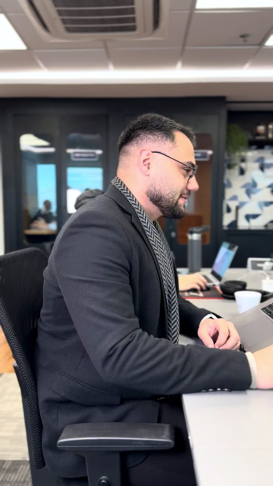

Consultoria empresarial de 12 horas
Diagnóstico e plano de marketing
Direção de marca e marketing para um negócio real.

Quando as decisões estão dispersas, contratar mais ações pode apenas ampliar o retrabalho. A empresa precisa entender o cenário, escolher prioridades e alinhar a execução à capacidade.
Para quem faz sentido
Pequenos negócios com uma oferta principal e um público a priorizar, que precisam organizar posicionamento e marketing antes de ampliar a execução.
Objetivo do trabalho
Organizar o diagnóstico, definir um posicionamento inicial e construir um plano de 90 dias com decisões, recursos e responsabilidades.
O que é abordado
- Leitura orientada de até cinco materiais autorizados da empresa.
- Entrevista de diagnóstico com até três representantes no mesmo encontro.
- Público prioritário, alternativas, proposta de valor e mensagens.
- Plano de ação de 90 dias, orçamento preliminar e governança.
- Apresentação final e uma rodada consolidada de ajustes dentro do escopo.
O que você desenvolve
- Sintetizar fatos, hipóteses e lacunas do cenário.
- Definir público, benefício e evidências da oferta principal.
- Estabelecer até três prioridades de marketing.
- Transferir o plano e os critérios de acompanhamento para a equipe.
Como acontece
Quatro encontros de 1h30, intercalados com seis horas de análise e elaboração técnica. Calendário sugerido de três a quatro semanas, condicionado ao envio de informações e à agenda da empresa.
Exercício prático
As escolhas são discutidas com o empresário e testadas contra os materiais disponíveis. Cada prioridade precisa responder a um problema identificado, ter responsável, prazo, recurso estimado e critério de aceite.
Agenda detalhada
| Atividade | Duração |
|---|---|
| Preparação e leitura técnica | 60 min |
| Encontro 1: diagnóstico | 90 min |
| Análise de oferta e comunicação | 120 min |
| Encontro 2: posicionamento | 90 min |
| Elaboração técnica do plano | 120 min |
| Encontro 3: plano e responsabilidades | 90 min |
| Ajustes técnicos consolidados | 60 min |
| Encontro 4: entrega e próximos passos | 90 min |
| Total | 12h |
O que fica depois
- Síntese diagnóstica de até cinco páginas.
- Uma página de posicionamento e até três mensagens prioritárias.
- Plano de 90 dias com até três prioridades.
- Orçamento por categoria, premissas, indicadores e rotina de revisão.
- Apresentação de devolutiva e arquivos finais em PDF e formato editável.
Como avaliamos
O aceite considera coerência e completude das entregas acordadas, distinção entre fatos e hipóteses, responsabilidades e premissas registradas; não depende de promessa de faturamento.
Como se preparar
Disponibilizar os materiais acordados, dados agregados pertinentes e um interlocutor responsável por validar informações e consolidar decisões.
Fundamento aplicado
O diagnóstico precede a escolha de ações. O trabalho combina análise de posicionamento, coerência da comunicação e planejamento, distinguindo o que está demonstrado do que ainda depende de validação.
Escopo bem definido
Não inclui pesquisa representativa, identidade visual, produção contínua de conteúdo, campanhas, site, registro de marca, implantação de CRM ou execução das ações. Escopos adicionais são contratados separadamente.
A duração e o calendário consideram o envio dos materiais e a participação de um interlocutor responsável. O acompanhamento da execução pode ser contratado em outro escopo.
Outros formatos
- Posicionamento e proposta de valorWorkshop de 4 horas. Por que o cliente escolheria sua empresa?
- Marketing e comercial integradosTreinamento com workshop de 4 horas. Do primeiro contato à próxima decisão.
- Plano de marketing 2027Workshop de 4 horas. Prioridades, orçamento e execução para uma equipe pequena.
- Sua empresa entrega valor. Sua marca consegue mostrar?Palestra participativa de 1 hora. Uma conversa prática sobre promessa, prova e experiência.
Qual decisão precisa
ficar mais clara?
Conte o contexto, o público e o desafio. A proposta parte dessa conversa.